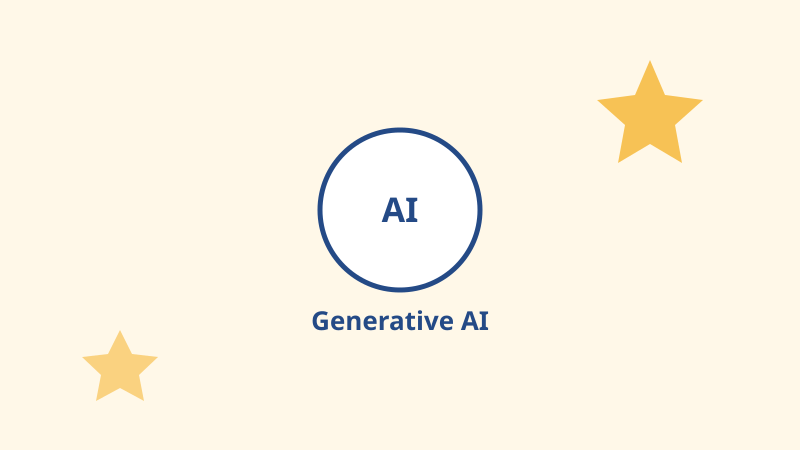

Generative AI
Mengenal Generative AI dan Cara Kerjanya
Generative AI mampu menghasilkan teks, gambar, dan kode baru. Pelajari konsep dasar di balik teknologi ini.
Rani Putri
12 Sep 2026
Baca Selengkapnya